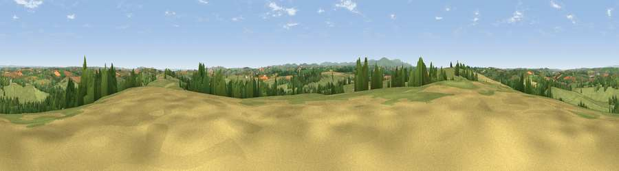

Viewpoint near Down St Mary
#12522 in England · top 16% of its area beats it · near Down St Mary · path 256 mWhere it is
The exact computed spot (SS 74375 02925). Click the marker for map links.
Public access: the nearest public right of way is about 256 m away — the final stretch may cross private land. Computed from Natural England's CRoW access layer and OpenStreetMap rights of way — not the legal definitive map. Always verify locally.
The view, rendered

A 360° render of this exact spot computed from the terrain model, tree cover and land cover — summer colours, afternoon light, calibrated against photographs of famous viewpoints. Real trees, hedges and buildings will differ in detail.
The panorama
Grey silhouette: terrain skyline in each direction (720 bearings, Earth curvature and refraction included). Dashed green: skyline with trees (+15 m) and buildings (+8 m) as obstacles. Blue strip: how far the ground is visible on each bearing.
Where the view opens
Wedge length = distance to the farthest visible ground on that bearing (vegetation-aware). Rings at 10, 25 and 50 km.
What fills the view
73% grassland · 15% cropland · 11% woodland ·
Angular shares of the visible panorama (visual magnitude), not map area. Landscape diversity 0.35 (0–1 Shannon).
Key numbers
More beautiful places nearby
The staircase of upgrades: each row has a higher view potential than everything closer. Driving times are estimates from straight-line distance, calibrated against real road routing — check an actual route before setting out.
| Place | Direction | Drive | Score |
|---|---|---|---|
| Serstone Hill | W · 1 km | ~3 min | 61.1 |
| Viewpoint near Copplestone | E · 4 km | ~10 min | 62.3 |
| Woolsgrove Hill | E · 5 km | ~11 min | 64.0 |
| Viewpoint near Venny Tedburn | SE · 9 km | ~17 min | 70.1 |
| Viewpoint near Pathfinder Village | ESE · 12 km | ~23 min | 71.0 |
| Viewpoint near Drewsteignton | S · 14 km | ~25 min | 74.4 |
| Viewpoint near Drewsteignton | S · 14 km | ~25 min | 75.1 |
| Butterdon Hill | S · 14 km | ~26 min | 76.4 |
50.81221, -3.78449 · source: screening · position refined by local search. Computed location — check access rights before visiting.